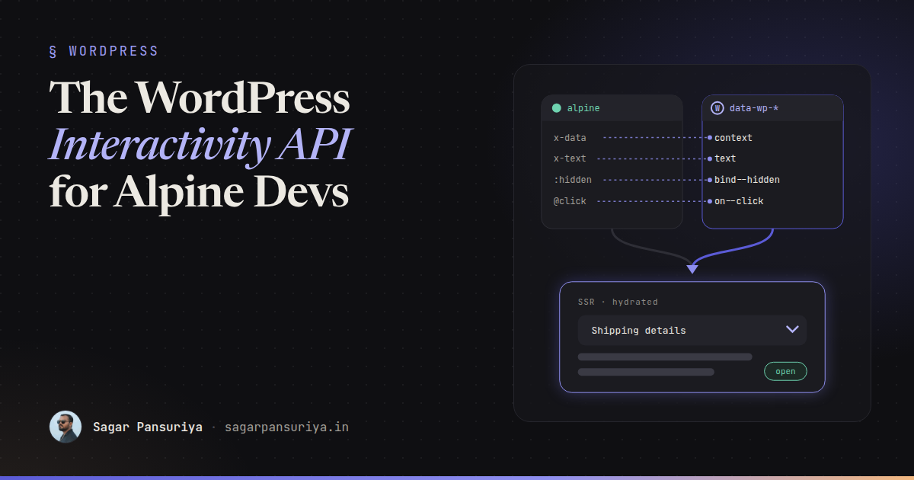
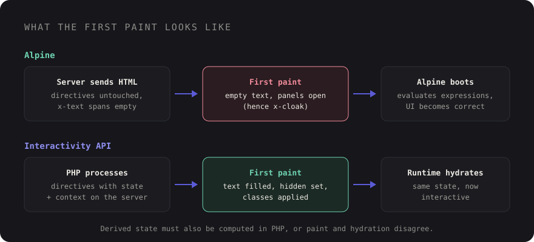

The WordPress Interactivity API for Alpine.js Developers


If you build WordPress themes with Alpine.js, the Interactivity API probably looks strangely familiar the
first time you see it. There are attributes on HTML elements, a bit of reactive state, click handlers
declared in markup. It's easy to glance at data-wp-on--click and think "so it's Alpine with
longer attribute names".
It's close, but the differences are the interesting part. The Interactivity API is WordPress's own standard for frontend interactivity in blocks, available since WordPress 6.5. It renders its directives on the server in PHP, it doesn't evaluate JavaScript expressions from your markup, and it's designed so blocks from different plugins can share state and work together on one page.
This post maps what you already know from Alpine onto the Interactivity API, with side-by-side examples, and ends with when I'd reach for each inside a WordPress project. I'll stick to the core, well-documented directives.
The mental model in one paragraph
In Alpine, you write JavaScript expressions directly in attributes and Alpine evaluates them in the
browser. In the Interactivity API, attributes only reference things: a value in
state or context, or a function in actions, optionally negated
with !. The logic lives in a JavaScript store, registered under a
namespace. WordPress reads the same directives in PHP to render the correct initial HTML, then a small
runtime in the browser takes over.
A toggle, side by side
Here's the classic disclosure widget in Alpine:
<div x-data="{ open: false }">
<button @click="open = !open" :aria-expanded="open">Details</button>
<div x-show="open">Shipping takes 3 to 5 working days.</div>
</div>And the same thing with the Interactivity API:
<div data-wp-interactive="myTheme"
data-wp-context='{ "isOpen": false }'>
<button data-wp-on--click="actions.toggle"
data-wp-bind--aria-expanded="context.isOpen">Details</button>
<div data-wp-bind--hidden="!context.isOpen">Shipping takes 3 to 5 working days.</div>
</div>// view.js
import { store, getContext } from '@wordpress/interactivity';
store('myTheme', {
actions: {
toggle() {
const context = getContext();
context.isOpen = !context.isOpen;
},
},
});Three things stand out for an Alpine developer:
data-wp-interactivesets the namespace. Every directive inside it resolvesactions.toggleagainst themyThemestore. Alpine has no equivalent becausex-datascopes are anonymous.data-wp-contextis local state, as JSON. It plays the role ofx-data's object, and nested elements inherit it, but it can't contain functions.- The click handler is a name, not code. You can't write
context.isOpen = !context.isOpeninline. That feels restrictive for about a day, then it starts to feel like a sensible separation.
The directive cheat sheet
| Alpine | Interactivity API | Notes |
|---|---|---|
x-data | data-wp-interactive + data-wp-context | Namespace plus local JSON state |
x-text | data-wp-text | Also rendered on the server |
:attr / x-bind | data-wp-bind--attr | e.g. data-wp-bind--disabled |
:class | data-wp-class--name | One directive per class, toggled by a boolean |
:style | data-wp-style--prop | One directive per CSS property |
@click / x-on | data-wp-on--click | Action receives the event |
@resize.window | data-wp-on-window--resize | Also data-wp-on-document-- |
x-show | data-wp-bind--hidden | Use negation: !context.isOpen |
x-init | data-wp-init | Runs once when the element is hydrated |
x-effect | data-wp-watch | Re-runs when the state it reads changes |
x-for | data-wp-each | On a <template>, item available as context.item |
Alpine.store() | store() with state | Global, shared across blocks by namespace |
The double dash is the pattern to remember: data-wp-{directive}--{suffix}, where the
suffix is the attribute, class, style property or event name.
State vs context
This is where Alpine habits need adjusting. The Interactivity API has two kinds of reactive data:
- Context (
data-wp-context, read withgetContext()) is local to an element and its children. Two accordions on a page each get their own. Thinkx-data. - State (
statein the store) is global for the namespace. Every block usingmyThemesees the same values. ThinkAlpine.store().
A mini cart is the textbook case for state. The header badge and every "Add to cart" button on the page share one count:
// view.js
import { store } from '@wordpress/interactivity';
const { state } = store('myTheme', {
state: {
get cartLabel() {
return state.cartCount === 1 ? '1 item' : `${state.cartCount} items`;
},
},
actions: {
addToCart() {
state.cartCount++;
},
},
});The getter is derived state, the equivalent of an Alpine getter on a store object. Notice that
cartCount isn't defined in JavaScript at all. It comes from the server.
If you've wrestled with where state should live in a TALL app, the same thinking applies here as in Alpine stores vs Livewire state: keep it local unless more than one component genuinely needs it.
Server-side rendering of initial state
This is the biggest practical difference from Alpine. You seed global state in PHP with
wp_interactivity_state(), and WordPress processes the directives while rendering the page:
<?php
$count = WC()->cart ? WC()->cart->get_cart_contents_count() : 0;
wp_interactivity_state( 'myTheme', array(
'cartCount' => $count,
// Derived values need a server-side value too
'cartLabel' => 1 === $count ? '1 item' : "{$count} items",
) );
?>
<a href="/cart" data-wp-interactive="myTheme">
Cart (<span data-wp-text="state.cartLabel"></span>)
</a>The HTML that leaves the server already contains the cart label text, hidden attributes
already set, classes already applied. The browser paints the correct UI before any JavaScript runs,
then the runtime hydrates and picks up the same state. With Alpine, the server sends empty
x-text spans and elements that should be hidden until Alpine boots, which is why
x-cloak exists.
The catch: derived state defined only as a JavaScript getter doesn't exist on the server. Compute
derived values in PHP as well (like cartLabel in the snippet above), or the
first paint and the hydrated version won't match.
For local context, the wp_interactivity_data_wp_context() helper prints a correctly
escaped data-wp-context attribute from a PHP array, which saves you from hand-writing JSON
inside single quotes:
<div data-wp-interactive="myTheme"
<?php echo wp_interactivity_data_wp_context( array( 'isOpen' => false ) ); ?>>
Events and async actions
Actions receive the DOM event, so form handling looks like this, since there's no
x-model equivalent:
<input type="search"
data-wp-bind--value="state.query"
data-wp-on--input="actions.setQuery">actions: {
setQuery(event) {
state.query = event.target.value;
},
*loadResults() {
const response = yield fetch(`/wp-json/wp/v2/posts?search=${encodeURIComponent(state.query)}`);
state.results = yield response.json();
},
},Async actions are written as generator functions with yield instead of
async/await. It looks odd at first, but it lets the runtime restore the right
scope, so getContext() still works after the yield. With plain
async functions you'd lose that.
Wiring it up in a block
For a block, opt in through block.json and load your store as a script module:
{
"name": "my-theme/faq",
"supports": { "interactivity": true },
"viewScriptModule": "file:./view.js",
"render": "file:./render.php"
}WordPress then processes directives in the block's rendered output automatically. One gotcha if you're
used to bundling everything with Vite: @wordpress/interactivity must come from WordPress
itself, loaded as a script module, not bundled into your file. Every block on the page has to share one
runtime, or stores and hydration won't line up. The official @wordpress/scripts tooling
handles that for you; with a custom build, mark it as external.
When to use which
In most WordPress projects I'd use both, for different jobs.
Reach for the Interactivity API when
- You're building blocks, especially ones editors place freely or that ship in a plugin.
- Several blocks need to share state (a filter block and a results block, a cart badge and product cards).
- The first paint must be correct without JavaScript: SEO-relevant content, no layout shift, no cloak flicker.
- You care about a strict Content Security Policy. Alpine's standard build evaluates expressions in a way CSP blocks unless you use its CSP build; the Interactivity API doesn't evaluate expression strings at all.
Stick with Alpine when
- Your theme is Sage or another classic-style theme that already uses Alpine in Blade templates, like the setup in Blade components in WordPress with Sage and Acorn.
- The interaction is small, template-level and self-contained: a mobile nav, a tab set, a dropdown.
- You need rich inline logic and your team is fluent in Alpine already.
They can live on the same page without trouble. Just don't mix both sets of directives on the same element or ask them to share state directly. If an Alpine component and an interactive block need to talk, use a DOM custom event as the boundary.
Takeaways
data-wp-interactivesets a namespace;data-wp-contextis yourx-data, as JSON.- Directives reference
state,contextandactions; logic lives in the store, not the markup. - Context is local, state is global per namespace.
- Seed state with
wp_interactivity_state()and compute derived values on the server too. - Use generator functions for async actions.
- Never bundle
@wordpress/interactivity; load your store as a script module. - Blocks and shared state: Interactivity API. Theme-level sprinkles in Blade: Alpine is still great.
If you already think in Alpine, you're most of the way there. The main adjustment is moving logic out of attributes and into the store, and in return you get server-rendered first paints that Alpine can't give you on its own.
Discussion